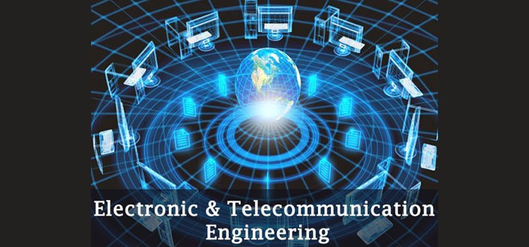

School of Engineering, Technology and Sciences
B.Sc. in Computer Science & Engineering (CSE)
Major
To attain a B.Sc. in Computer Science & Engineering, a student must complete a minimum of 143 credits of course and lab works which typically takes 4 years. The courses of the CSE undergraduate degree is designed keeping two things in mind. First, knowledge of Computer Science, that is infused into the system through cleverly designed courses based on programming knowledge and Second, to provide students with an in-depth study of hardware to balance the software side.
School of Engineering, Technology and Sciences
B.Sc. in Electrical & Electronic Engineering (EEE)
Major
The is an open credit program and is designed for four years, but the course duration may vary depending on how many prerequisite courses a student has to undertake. Each year consists of three regular semesters: Spring, Summer & Autumn. Upon admission, a faculty adviser is assigned to each student for guidance and direction in meeting degree requirements and academic goals.
School of Engineering, Technology and Sciences
B.Sc. in Electronic & Telecommunication Engineering (ETE)
Major
The is an open credit program and is designed for four years, but the course duration may vary depending on how many prerequisite courses a student has to undertake. Each year consists of three regular semesters: Spring, Summer & Autumn. Upon admission, a faculty adviser is assigned to each student for guidance and direction in meeting degree requirements and academic goals.
School of Business and Entrepreneurship
Bachelor of Business Administration (BBA) in Accounting
Major
Aims to provide quality education and training in the field of accounting with a focus in the area of financial accounting, managerial accounting, auditing, and taxation. Equip students with relevant professional knowledge and skills to meet the challenges of the local and global business contexts. Engage students with the community to become informed and compassionate global citizens.
School of Liberal Arts and Social Sciences
Bachelor of Arts (BA) in English Language Teaching
Major
The English Language Teaching (ELT) program readies students for language education roles. Alongside exploring various literary genres, students focus on language and teaching courses for potential careers in schools and intermediate colleges. Graduates can also venture into journalism and print media or pursue further studies.